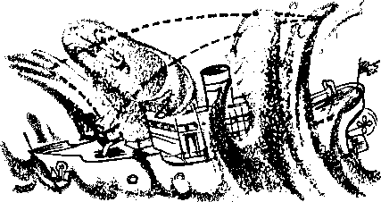

wrch Unity in the Air
Aiy So Much Cheating in School?
PAGE a
w>p the High Cost of Waste
of Ten Thousand Smokes
JUNE 8, 1960
THE MISSION OF THIS JOURNAL
Newt sources that are able to keep you awake to the vital issues of our times must be unfettered by censorship and selfish interests. "Awake!" has no fetters. It recognizes facts, faces facts, is free to publish facts, it is not bound by political ambitions or obligations; it is unhampered by advertisers whose toes must not be trodden on; it is unprejudiced by traditional creeds. This journal keeps itself free that it may speak freely to you. But it does riot abuse its freedom. It maintains integrity to truth.
"Awakel” uses the regular news channels, but is not dependent on them. Its own correspondents are on all continents, in scores of notions. From the four corners of the earth their uncensored, on-the-scenes reports come to you through these columns. This journal's viewpoint is not narrow, but is international. It is read in many nations, in many languages, by persons af all ages. Through its pages many fields of knowledge pass in review—government, commerce, religion, history, geography, science, social conditions, natural wonders—why, its cover age is as broad as the earth and as high as the heavens.
"Awake!" pledges itself to righteous principles, to exposing hidden foes and subtle dangers, to championing freedom for all, to comforting mourners and strengthening those disheartened by the failures of a delinquent world, reflecting sure hope for the establishment of a righteous New World.
Get acquainted with "Awake!" Keep awake by reading "Awakel*1
PrrBUSHca SintnjTJurncusL'r in ths United States by ths WATCHTOWER BIBLE AND TRACT SOCIETY OF NEW YORK, INC, 117 Adams Street Brooklyn 1, New York. U.S.A.
ano in England by WATCH TOWER BIBLE AND TRACT SOCIETY
Watch Tower House, The Ridgeway N. H. Knorb, Prestdont
Printing this issue: 3,075,000
‘Awns!" Is sekllsM Is ttw tsi lowing 21 esBlnostlllr-^Arrtksms, Danish, Dnitb, English, rmn-lati, Efreneii, Owman. Creak, I Lallan, Jipatieso, glan. Portuguese, Spanish. SwtdJab, Zulu-
IfMtfrfr—Ifitattriaib Korean, Polish, Uknln-|1D.
Ytarly gnteeripUtm raia
Oflltss for sernlmciithlj edlUahs
America, U-S.» 117 Adame str Brodilyn 1, N,T. $1 Art trail*’ 11 Bamford Bd.. Strathfield, N.S-W.
Canada. 150 BrtdgeUad An., Toronto 19r Ont.
EsatafUf, ffitdi fftntrc, The Kldgevar, London N.W. 7
New laahnis 621 New North Bd.. Airkltwl, S.W. 1 7/-Sortfr Africa, Private Bag., ElanJafwilirin, Til 7/-
Moulbly editions ccH bait the aiwre retea.
l»oBdOD N.W. 7, BnglaDd Gunt Sun™, Secretary
4d a copy (Australia, fid) ■amfttmoes fur sufartpitoas airociJ be atrrt to jfae !□ yuur cmmtrr. (Hiwrrlw send yuur remltLuu^ to Luodon. Nolle* of expiration la sent at least tvo issues before imbsodptton expire*.
CHARGES OF ADDRESS thoaid reach Hiirty dap before yoir inning data. GM n yg«r old And Udrew (It panlhla. hit old slfreu label). Watch Tosrer, Watch Tower Hom, The Ridgeway, iMdM N.Y, 7g EaUM
Bn lend m second'daas matrer it Brooklyn, N.T. Printed la England
Th Bible trenilatlm itid la “Awnkil" It ttt Mew World TranilstlM d th Roly Script™. When rtte® tranalatione an im! the following rymMc will appes behind the eltatltna;
— AfflwdcAD £iindard Version AT- Ao American Tranalflliflo Authorhetf Verdon (16l£j j5ti - J. N, Darby’s raslcm
— Calbolle Duuaj rerriou ED- The Emphatic Ofagtott JP - Jewish Publication Boe, Le - But User's radon
Mo- Jams Moffatt's radon JEo - J- J. Sodfvfaam’j rerafam ftfl- Berteed Standard Verslijn - Botat Taung's radon
|
Experts Can Be Wrong |
3 |
Sweden’s Problem Children |
|
Church Unity in the Air |
5 |
What Causes Those Freckles? |
|
Why So Much Cheating in School? |
8 |
Oh! My Ulcers! |
|
Miscellany |
12 |
Suffering from an Overdose |
|
Stop the High Cost of Waste |
13 |
“Your Word Is Truth” |
|
Valley of Ten Thousand Smokes |
17 |
"Tormented . . . Forever"? |
|
Kight Works on Floating Territory |
20 |
Watching the Wortd |
men who are held in high esteem by this world. Their learned opinion was that the railway engine would never move but would remain in one spot with its wheels
WHEN the railroad was being pioneered the scientific experts of the day condemned it with the cocksureness that is so typical of slipping on the rails. They were wrong. It did move, and railway trains became one of the world’s chief means of transportation.
The expert opinion of the elite scientists of the famous French Academy of Sciences at the time when steam was first being experimented with for use in boats was just as wrong. Their opinion was that the experiment was not worth spending money on. On another occasion these exalted men of learning were wrong about meteorites. They declared with the positiveness of men famous for their intellect that stones could not fall from the sky and that meteorites must be stones belched up by volcanoes. Once again the experts were wrong.
When William Harvey made known his discovery about the circulation of blood in the body, medical experts denounced him. Despite their great learning, Harvey was right and they were wrong. The story has been the same for a great many other discoveries and inventions that proved to be milestones in the advancement of human knowledge and modern civilization. Self-opinionated experts were, time and time again, obstructions to progress. They were celebrated for their learning but foolish in being so positive.
Human advancement has been remarkable during the last sixty years, but that has not eliminated the attitude of overconfident positiveness that caused experts in past centuries to appear so very fbolish. Regarding this Anthony Standen states in his book Science Is a Sacred Cow: “Scientists are exalted beings who stand at the very topmost pinnacle of popular prestige, for they have the monopoly of the formula ‘It has been scientifically proved . . . ’ which appears to rule out all possibility of disagreement. . . . Hie dreadful cocksureness that is characteristic of scientists in bulk is not only quite foreign to the spirit of true science, it is not even justified by a superficial view.”
Many modem doctors of medicine are as loath to having the wisdom of their expert opinions questioned as were learned doctors of past centuries who followed medical procedures that are now wholly discredited. It is true that they know more about their field than the layman, but that does not mean that methods of treatment discovered by persons without degrees from a medical school are not worth being considered. A well-known example is the case of Elizabeth Kenny, who developed a new method for treating persons stricken with polio. “To most medical men,” Marvin Kline states in Readers Digest., “it was inconceivable that anyone with so little formal training could have developed a successful method of treatment.” But again the experts were wrong.
At one time doctors had the practice of bleeding their patients, and no doubt would have been greatly incensed if any layman had dared to object to it. Today the pendulum has swung in the other direction. Instead of bleeding patients, blood is put into them. Some doctors become furious when a person objects to this practice and will refuse to attempt any alternative treatment such as blood substitutes although these have proved to be very effective. Persons who have recovered without blood transfusions, although told that they would die without them, have shown that medical experts can be wrong.
Scientists may proudly claim that they are reasonable and tolerant, yet many of them show by their actions that they can be very narrow-minded and bigoted. Because a man has much learning, that does not make him wise, although he may imagine himself to be a man of wisdom. Paul Tabori states in his book The Natural Science of Stupidity: "There are stupid nen who possess vast knowledge; the man vho can reel off the dates of battles, the statistical data of exports and imports, can still be a dolt. There are wise men whose mowledge is very limited. As a matter of fact, prolific, luxuriant knowledge can often mask stupidity.”
The man with wisdom is not the man with a lot of knowledge who has an inflated opinion of himself, but is the man who knows how to use the knowledge he has with good judgment. The Bible gives splendid counsel when it says: "Do not become wise in your own eyes.” (Prov. 3: 7) The man with wisdom does not exalt himself as an expert whose opinions are infallible, but he realizes how little man really knows. He is well aware that all the knowledge man has gained is no more than a faint spark in the vast darkness of the unknown. The wise man humbly acknowledges the fact that man has much to learn.
The experts of this world may make their dogmatic statements with an impressive appearance of persons with great wisdom, yet in the eyes of the One who created this material universe about which man knows so very little, their wisdom is foolishness. They study his magnificent creations and then stretch their imaginations to great lengths trying to explain how these creations came into existence by themselves, by mere accident. “It is written: ‘I will make the wisdom of the wise men perish, and I will shove the intelligence of the intellectual aside.’ Where is the wise man? Where the scribe? Where the debater of this system of things? Did not God make the wisdom of the world foolish?”—1 Cor. 1:19, 20.
Because a person may be classed as an expert in a certain field of knowledge, that does not mean his opinions are without error. The practice of this technical civilization of putting scientific experts on pedestals and looking up to them with awe is a grave mistake. Instead of saving the human race, they are endangering it. Mankind’s hope for preservation is not in worldly men of learning but in the wisdom of Jehovah God.
ft
ar» Ai*
Ai* ChrMian h
■ I; A
66TTNITY is in the air”—so LJ says Presbyterian cleric Eugene Carson Blake, a World Council of Churches executive. Speaking also in a positive way, Protestant Episcopal Bishop of Delaware J. Brooke Mosley declares that church unity is "no pipe dream.” The churches, Bishop Mosley insists, are “drawing together.” At the core of this drawing-together process, he said, is the growing ecumenical movement represented by such bodies as the World Council of Churches, the National Council of the Churches of Christ in the United States of America and similar groups. Not only Protestants, but the pope is also talking of unity.
Pope John XXilTs announcement last year electrified Christendom; he announced “an ecumenical [world-wide] council for the universal church.” The council, the pope pointed out, "is intended also as an invitation to the separated communities in quest of unity.” Later it was announced that representatives of the Roman Catholic and the Eastern Orthodox Churches will hold unofficial theological /discussions in Venice with a view to possible reunion of the two churches.
- With all this talk of church unity, ' one naturally wonders: Is there really a basis for the optimism of so many churchmen? Whether great
Church mergers take place or not, how is the Christian to view the matter?
Taking a look at the church unity move-ment, we find that it is now at least fifty years old. The 1910 Edinburgh Conference
WSS the beginning of major talks over enurch unity. In 1925, in Stockholm, and m 1927, in Lausanne, there were further conferences involving church unity. In 1948 the World Council of Churches came into formal existence. How effective is the World Council in promoting unity? "Again and again,” said The Christian Century of September 30, 1959, “the World Council reminds its members that it is not an organization to organize unity. It would break up tomorrow if it began actively to promote unions.” With specific church mergers not the chief goal of the World Council, its members seem to concentrate on co-operation and understanding between the churches. Dean Liston Pope of the Yale Divinity School says: "Certainly the World Council of Churches has no intention of becoming a superchurch.” Church leaders desire, says Dean Pope, “a much greater degree of unity than we now have.”
Despite the fact that most of the church unity movement has been made up of conferences and talk, there has been some success: The two large Presbyterian churches in Scotland merged to become the Church of Scotland. A similar merger in the United States resulted in the United Presbyterian Church. But there seem to be
more setbacks than success. The Church of England and the Church of Scotland came to a standstill in their negotiations. Talks between the Congregationalists and Presbyterians in Britain broke down. Talks between the United Church and the Anglicans in Canada were dropped.
What about talk of unity between Protestants and the Roman Catholic Church? "The Catholic Church,” said one of the Vatican’s chief spokesmen on unity, “can never consent to putting herself on the same plane with other confessions.” Regarding the conference called for by the pope, correspondent Robert Neville, a specialist on Vatican matters, reports: “It will be, first of all, a purely Catholic gathering, held under Catholic jurisdiction with Catholic rules and regulations prevailing throughout. The Pope will be chairman of the council. All together, some 3,000 prelates will attend. Voting members will be diocesan bishops of active sees, plus perhaps some theologians, all Catholics. . . . Nothing approaching a debate or any bargaining with members of other faiths will be permitted.”
One of the great obstacles to merger between the Orthodox and Protestant churches and the Roman Catholic Church is the Catholic doctrine of papal infallibility.
But more and more there is talk of church unity despite disunity. The “coming great church,” according to Bishop Mosley, will have unity but will not require uniformity: “We are not expected to give up that which is essential to us in matters of faith and order or even that which is precious to us in our traditions.”
Thus the idea is to have a headquarters unity but not to worry about doctrinal unity. The “coming great church” would be a conglomeration pf different creeds and dogmas. “I rejoice that there are many creedal formulations,” writes cleric Howard Conn of the Plymouth Congregational Church of Minneapolis, “many shades of opinion and many sincere interpretations. I believe that God is more fully grasped by the multitudinous traditions with their varying emphasis than by a uniformity of belief and practice.” (The Christian Herald of August, 1958) So unity of belief would be sacrificed on the altar of expediency. The churches would have unity of action and headquarters but at the same time they would keep their differences doctrinally.
Well summing up the church unity movement is Dr. Samuel McCrea Cavert, recently retired as executive secretary of the New York Office of the World Council. From the vantage point of forty years’ contact with the interfaith movement, Dr, Cavert says: “The question is whether we can find a united church where there is enough room for differences.”
What is the Christian to think of all this? Instead of depending on clerical interpretations and views, the Christian goes to God’s Word, the Holy Bible. He seeks the mind of Jehovah God on the matter of interfaith, on the matter of putting up with all kinds of conflicting dogmas and doctrines.
By a study of the Bible the Christian learns that Jehovah God has always been opposed to compromise with falsehood and even to association with those whose doctrines are not “healthful teaching according to the glorious good news of the happy God.” (1 Tim. 1:10, 11) Going back to the time of ancient Egypt, the Christian learns that Jehovah opposed the false gods and dogmas of the Egyptians and would not tolerate any interfaith movement involving his people and false religions. The ten plagues were evidence of God’s opposition to interfaith.
Since the doctrines of the various churches conflict with one another, some of them must be false. But no effort is effectively being made by them to go to the Bible to root out these false teachings, using the Bible as the standard. Rather, they will put up with false doctrines to gain the objective of headquarters unity. What a different course of action was taken by Jesus Christ! He did not try to merge the Christian organization with the scribes and Pharisees, putting unity above right doctrine. No, but Jesus declared emphatically: “Let them be. Blind guides is what they are. If, then, a blind man guides a blind man, both will fall into a pit.”—Matt. 15:14.
The apostles of Jesus Christ taught likewise; and never did they encourage any interfaith, any compromise with falsehood, any idea that doctrinal differences were all right. Ruling out the basic principle of the church merger movement, the apostle Paul declared: “I exhort you, brothers, through the name of our Lord Jesus Christ that you should all speak in agreement, and that there should not be divisions among you, but that you may be fitly united in the same mind and in the same line of thought.” —1 Cor. 1:10.
Doctrinal unity and, above all, harmony with the pure Word of God is what Jehovah requires. No matter that churchmen may have conflicting “sincere interpretations” and “multitudinous traditions”! Jesus Christ, quoting the word of God as recorded by the prophet Isaiah, stated the matter clearly: “ ‘“It is in vain that they pay respect to me, because they teach as doctrines commands of men.” Letting go the commandment of God you observe the tradition of men.’ Further he went on to say to them: ‘Adroitly you set aside the commandment of God in order to retain your tradition.’ ”—Mark 7:7-9.
1 And that is what the church unity movement does—sets aside the will and commandments of God to retain their traditions and conflicting dogmas for the sake of outward unity! How utterly opposed Jehovah and Jesus Christ are to such movements for true Christians’
Even when various churches refuse to join in the great interfaith movement, their refusal is not based on the will of God and God’s commandments. Usually their fear is that of having to give up something, some tradition, some dogma. But the Bible view is this: “Do not become unevenly yoked with unbelievers. For what partnership do righteousness and lawlessness have? Or what fellowship does light have with darkness? ... ‘Therefore get out from among them, and separate yourselves,’ says Jehovah, ‘and quit touching the unclean thing.’ 2 Cor. 6:14-17.
Talk of church unity is in the air, but the psalmist reminds us: “Unless Jehovah himself builds the house, it is to no avail that its builders have labored on it.”—Ps. 127:1.
True Christians shun the unscriptural house that interfaith workers would build; they go to the Bible to see what true worship really was before interfaith activity with paganism corrupted it with traditions of men. That is the course Jehovah’s Witnesses have taken—going back to the pure first-century Christianity, to the principles Jesus actually taught; and for doing so they are receiving Jehovah’s rich blessings.
WwMMtaek,
6617'VERYONE else is dor j ing it. Why shouldn’t you? Why should you get low marks?” replied a high school junior when asked about the prevalence of cheating in school. Does this pupil’s appraisal reflect a growing trend toward cheating among students, especially at the high school and college levels? Just how widespread is cheating in school? Is there any seribus harm in it? Should it be passed off as a youthful prank, or is it the sign of something far more serious?
To determine the extent of using illegitimate aid in examinations, a survey was taken of 3,000 students in eleven colleges. It revealed that 40 percent of the students resorted to some form of cheating. In another instance the editor of a college paper contended that up to 90 percent of the students at his college cheated during examinations. At one large university students produced evidence of dishonesty so widespread as to challenge the validity of work assignments and examinations at that institution.
One of the most extensive studies on this problem was made by a committee headed by Philip E. Jacob of the University of Pennsylvania, who compiled the study in his book Changing Values in College. He stated: “The chinks in the moral armor of American students are most obvious in regard to cheating. The practice is so widespread as to challenge the well nigh universal claim of students that they value honesty as a moral virtue. Frequent cheating is admitted by 40% or more at a number of colleges, often with no apology or sense of wrongdoing.” Another investigation produced this conclusion: “Actually, institutions where large scale, organized cheating has not been knpwn are a small minority," This opinion was corroborated by the observation of Dr. Edward D. Eddy, Jr., vicepresident and provost of the University of New Hampshire. At a meeting of the American Council on Education he told a discussion group that cheating throughout the country “has become a part of student culture, it’s taken for granted.”
Nor is cheating confined to one country. Even the Russians are plagued by it, as cheating is commonplace and the students joke about their notes written on narrow slips of paper.
The simplest form of cheating is for one student to copy from another who has moved his paper into a convenient position. In addition to this, however, all sorts of devices are used by pupils to receive or dispense information during examinations. At one school the established method of communicating true or false answers is the raising and lowering of a pencil to indicate right or wrong. Some have written answers on articles of clothing such as shirt cuffs and skirt hems. Others wrote on fingernails and various portions of the hand. In the case of some women students, answers have been written above the knee so as to be covered by the skirt. Notes have been placed in dummy pens and pencils, watches, cigarette packages and match covers. One enterprising student even had a small tape recorder inserted into a fake hearing aid. Others have secreted information outside the examination room, reaching it by excusing themselves on one pretext or another.
Examination papers have been obtained in advance by outright theft, pilfering of wastebaskets or by bribing employees and officials of schools. An associate professor of a university said: “Almost every period before finals several faculty offices are broken into at night by students attempting to steal examination ^questions.”
On one occasion the cheating backfired. A student sat near an open window and threw out the questions to a friend who hurried to the library, found the answers and typed them out. In the confusion after the examination was over, he slipped into the room and handed his friend the papers. This cheating would have gone undetected except for one detail the pair overlooked —the examination room had no typewriters!
Even more serious forms of cheating were uncovered recently by a daring reporter for a large New York city newspaper. Posing as a writer willing to work for cheating students, he contacted agencies whose business was the ghost-writing of term papers and theses for college students—for a price. His investigation showed that students paid from $50 to $500 for the writing of term papers and up to $3,000 for the writing of theses needed for higher college degrees. This reporter, Alex Benson of the New York World Telegram and Sun, was actually hired by one ghost-writing firm to substitute for a cheating student and take his college examination for the fee of $40! Later the student informed Mr. Benson that he had received an A- for his efforts!
While many students are disturbed over the growing trend toward cheating, others are not and regard it as standard practice. Many consider cheating as a necessary evil of modern life. The consensus of opinion among scores of high school students interviewed was that since cheating has become so prevalent, it is viewed as accepted academic technique. But why? What motivates these young people to cheat? Is it mere laziness? In some cases, yes, but there are other factors involved. A sixteen-year-old college freshman put it this way: “Everything is so competitive in high school and college. The emphasis is on getting high marks. They don’t seem to care what knowledge you get as long as you get good grades—no matter if you get them by cheating.” Another eighteen-year-old just out of high school spoke of the importance of final exams, which, she said, inspired cheating: “Every little test counts towards going to college. There’s such pressure on the kids. Soon the whole idea becomes a farce. I don’t think it’s right that they cheat, but the school is partly to blame.”
One girl whose father was a high school principal, her mother a teacher, resorted to cheating. A friend told why: “The standards held for her were so high they were beyond her. She had been pushed. She was an honestly bright girl. If she got a 97 she wondered why she didn’t get a 100.” Another said of his school: “Cheating is rampant here. The reason is there’s such a desire to go to college, so much emphasis on marks, college boards and careers,"
Teachers in general do not condone cheating. Yet by their lack of adequate supervision during examinations and their refusal to administer discipline where cheating is obvious, students are actually encouraged to continue the practice. In one large college an alert teacher caught a student cheating and put the case in the dean’s hands. The dean said that regulations permitted expelling the boy from school, but “nobody else invokes the rule. You’ve caught the boy and embarrassed him. Maybe he’s learned his lesson. We’ve always had cheats and we always will. Why get excited now? Think it over.” When the teacher asked other faculty members for their opinions in the matter, they responded with similar statements. One said: “It isn’t fair of us to expect it [honesty] of them.’’ Another replied: “Our job is to give students technical education. As I see it, if we start trying to teach morals and ethics, it will interfere with our basic purpose. Why should we care how they get the material so long as they get it?” So it went from teacher to teacher. Each advocated either a mild reprimand or indifference. However, one teacher expressed a notable sentiment voiced by instructors elsewhere, saying, “Why should we teach students to be honest and truthful? As soon as they get out into the world, they will find businessmen generally are out to get all they can in any way they can. If we teach students to be honest and truthful we’re giving them a false orientation."
This latter comment comes closest to the real source of encouragement for young people to cheat: the failure of adults to set the proper example for their children!
T^ue, cheating in school is a disgrace, but the real shame is the general moral letdown by grownups whose responsibility it is to raise the children. In every sphere of influence that a child can observe from the time he is old enough to understand, he finds fraud, deception, the attitude of getting away with it if you can. Many boys and girls sense this moral breakdown and are disturbed by it.
How can adults expect the young to grow up into men and women of integrity when respected businessmen, politicians, public figures, lawmen, yes, even teachers are involved in cheating, theft and immorality? A devastating example was set by one teacher at Columbia University, Charles Van Doren. After winning thousands of dollars on a popular TV quiz show it was revealed that Mr. Van Doren had been supplied with the answers beforehand! Teachers also have been involved in the recent ghost-writing scandals. At one of the agencies, a college professor in Oklahoma paid $1,250 to have his doctoral treatise rewritten. Still another teacher applied for the services of a ghost writer, saying, “I’m so busy teaching I just don’t have the time to do it.” He was told the price would be $100. Moreover, the student mentioned previously who paid $40 to have a substitute take his examination was a prospective teacher at a teachers college! When told of this, the president of the college said, “What concerns me most deeply is that the teaching profession is involved. It is particularly bad that prospective teachers should engage in such practices.” He added: “The general moral tone in our country is tending to encourage this sort of thing ... It is a little like our attitude toward the income tax—if you can get away with it it is all right.”
A famous coach told how colleges cheat when they “buy” top athletes, placing the major responsibility on college presidents. Not surprising, then, to hear reports like the one from Dingwall, Scotland, which told of the dirty work afoot in the 891-mile walking race from one end of the British Isles to the other. Organizers of the meet disqualified fifty contestants. Why? For sneaking rides when they thought no one was looking!
Instances such as these serve to undermine the faith of children in their adult leaders. Commenting on the TV quiz scandals, political dishonesty, and student cheating, a college freshman declared: "I think it’s inevitable because of the moral sickness of our times. The whole outlook seems to be for money. People nowadays feel money is the most important thing. There seems to be no moral standard of right and wrong. You start wondering what the world is coming to.” A high school graduate expressed this thought: “You see a man in the position Van Doren was in . . . you sort of lose faith in humanity.”
Not only does cheating exert a bad influence on others, but it affects the lives of those who practice it. To illustrate: what would you think of a runner training for the Olympics who had someone else do his roadwork and exercise for him? How would you view a prizefighter who refused to spar a round while preparing for a championship bout, but hired someone else to do it? Would you trust your life in a critical operation to a doctor who received his degree by cheating? You would likely lack confidence in these people, because neither the runner nor the prizefighter nor the surgeon was adequately prepared for his task.
So, too, with students preparing for life. Having someone else do their work robs them of the mental exercise needed to train their minds for future undertakings. Developing the ability to think can be likened to the development of a healthy body. Lack of use tends to wither away the limbs. Similarly, lack of use tends to wither away thinking ability.
Further damage is done to cheaters in that it paves the way for compromise with other forms of wrongdoing. If a student practices dishonesty while in school, what kind of influence will he exert when he attains a high position in government, business or education? Will he stop cheating merely because he has stopped "being a student? All the evidence indicates otherwise. Cheating in small things leads to cheating in big things. Swindlers in all walks of life are not made overnight. They learn their bad habits over a period of time.
Cheating in school is the product of an increasingly sick age. Shortly before his death, Thomas Mann declared that the world was undergoing a moral and ethical retrogression that could nullify any progress achieved by the technological developments of recent years. This has been confirmed by the low tide of morality in all walks of life, the crime and delinquency rampant throughout the world, the dishonesty in business and social affairs. All of these things mark our highly significant age as the "last days” foretold in Bible prophecy. The remedy for these ills is the coming in of a new world, made possible by the greatest change in human history, the universal war of Armageddon, where God himself will wipe away all forms of cheating from the earth. Already hundreds of thousands of people who love honesty have gathered into a New World society and have made their minds over to the high standards set forth in God’s Word, the Holy Bible. These righteous principles are put into practice by them daily, and healthful mental habits are cultivated in the family circle by teaching young ones to respect the right and shun the wrong. They thus demonstrate to others that honesty can prevail in an entire society of people, young and old. Their reason for doing so is an overpowering, one—the desire to do God’s will and be found worthy of everlasting life in a paradise earth free from cheating and cheaters,
In response to the Washington Post's “Favorite Teacher” essay contest, a boy in the
this experience in The Maine Woods; “Once, when Joe [the Indian guide] had called again,
first grade sent in his letter, readily admitting that he liked "Miss Davis.” He scrawled: “I wish she was smart enough to teach second grade, too, next year.”
ROCKETING APPREHENSIONS
General J. B. Medaris, commander, of the Army Ordnance Missile Command at Redstone Arsenal, Alabama, received a letter from a class of school children. Hie eight- and nine-year-old children said that they had no buses for science trips but maybe they could ride in a rocket to the moon. “Now this could be a real good field trip,” the pupils wrote. "If you have any spare room, we would like to be the first third grade class to go into orbit. There are 34 in our class but some of the girls are scared, so all of us won’t go.” The general replied: "Were I planning such a trip now, I can think of no more pleasant companions than you daring adventurers." As for the girls’ apprehensions, he added; “I frankly don’t blame them.”
IN RHYTHM WITH THE WORLD
The following news report from London appeared in the Cleveland Plain Dealer of March 28, 1969: “Worshipers at a Good Friday service here tonight sipped beer while they sang hymns to rock ’n’ roll music. The service, organized by six Anglican parish priests, was held in the dance hall section of the Rose Tavern, and members of the congregation nipped out to the bar and brought back a beer when they felt thirsty. 'We art aiming at taking the Easter message to people who are not in church and we believe this is the way to do it,' explained Rev. Geoffrey Beaumont, 55, who wrote rock ’n’ roll accompaniment to the hymns played by two guitars, piano and drums. ‘I see no reason why we should not use the rhythm of the day to sing hymns and I see no reason why the congregation should not sip beer if it wants to.’ ”
THINKER
< Art Linkletter tells about one of his interviews: “I asked one little boy what he wanted to be when he grew up. He thought a long moment and then said: 'Alive.' "
A SOUND IN NATURE
<L American writer Henry David Thoreau tells and we were listening for moose, we heard, come faintly echoing, or creeping from afar, through the moss-clad aisles, a dull, dry, rushing sound with a solid core to it, yet as if half-smothered under the grasp of the luxuriant and funguslike forest, like the shutting of a door in some distant entry of the damp and shaggy wilderness. If we had not been there, no mortal had heard it. When we asked Joe in a whisper what it was, he answered, ’Tree fall.’ ”
f PROHIBITION
** Samuel Dicken, writing in Economic Geography, tells how the wine grape industry in the United States was able to survive through the Prohibition period. “When Prohibition came into force in 1920,” he writes, "many wine grape growers pulled up their vines and planted other crops. But many more continued to grow wine grapes, finding a limited market among the Italian and other European immigrants. Many thousands of home wine makers helped to maintain the industry. One enterprising producer of wine grapes marketed them In a pressed package which bore the injunction, 'Do not put these grapes in water with yeast for that will produce wine, which is illegal.' ”
RIDING THE WAVES
During a gale 180 miles off Bermuda, Francis Schremp, chief officer of the American freighter John Lykes, was swept off the deck of his ship by a fifty-foot wave. Before a full minute could pass, another gigantic wave swept him back onto his ship against a winch. Other crew members grabbed him to safety. In Liverpool, describing how fortunate he was to get wave-power propulsion back to his ship, Schremp explained: “I can't swim a stroke."
/WA5JE
WHY, in this world of plenty, should two thirds of the world’s population be undernourished and half of its children go to bed hungry every night? Why should anyone live on the edge of starvation and suffer from malnutrition diseases when there are mountains of foodstuffs stored away to rot? Why, in this twentieth century, when man-made satellites orbit the sun, when his rockets crash into the moon and his power-driven machines till the soil, should there be want? Why in this day should two thirds of humanity live in misery? The answer is not a pleasant or a simple one.
While there are loud boasts of technical progress and industrialization, yet 60 percent or 1,700,000,000 of earth’s inhabitants live in underdeveloped lands, where the wood plow, the hoe and the scythe are their main implements of food production. Of the world's 8,728,000 farm tractors, 93 percent are found mainly in North America and Europe. There have been changes, but these have been mainly in the industrialized West.
Fifty years ago an American farmer raised enough food for himself and six others. Today, with modem techniques and machinery, he produces enough for himself and nineteen others. When the Russian farm delegation visited Iowa in the summer of 1955, they found a father and his twelve year-old son operating a 320-acre farm without hired help. One Russian spoke up and said that in Russia it would take a hundred men to operate a farm that size. They saw quite a change due to modern farming. From 1940 to 1957,
United States farmers cut their potato acreage in half, but the yield per acre more than doubled. The 1957 crop was 4 percent larger than that of 1940. The problem is not the growing of food, but the disposing of it. Ninety percent of the world’s food is kept, consumed or wasted in the countries where it is produced. The surplus foods do not reach the starving millions. Why not?
It is not as easy to give away food surpluses as it may seem. Many nations are not exactly moved by compassion or neighborly love. The United States learned the hard way that to give away food or place it on the competitive world market can make enemies and irritate nations. A few years ago it wanted to sell some of its surplus butter to a friendly European nation so that that nation’s school children could have butter with their lunches, but the children’s dairymen objected. They argued that imported butter would jeopardize their domestic market price. There were charges from other nations that the United States was out to flood the market with its surpluses in violation of international trade agreements So while politicians and economists toyed with laws and prices, the children went without butter. And it is the same type of maneuvering that keeps food from the mouths of the hungry millions today.
During the nineteen twenties the method of disposing of surplus foods was leather crude when measured by today’s fashion. Back there they simply dumped good food into rivers, or heaped it up until it formed small mountains, then they poured oil or poison over the food so that no one would eat it. Sometimes foodstuffs were burned. In 1921, Brazil burned coffee for fuel. In New York 200 carloads of turkeys and other poultry were held on side tracks to obtain a better market price. In 1920, thousands of gallons of milk were dumped into rivers and creeks of southern Illinois. In the fall of that year a trainload of watermelons was dumped into the Potomac River to avoid breaking the city price below 25 cents. In the summer of 1924, thousands of packages of cucumbers and other fresh vegetables were deliberately destroyed. In October, 1921, farmers were told to burn corn instead of coal. And every few years the state of Maine lets a large supply of its potato crop rot in the ground just to keep prices up. In 1924, 5,000 carloads of peaches were left to rot on trees because the prices offered by dealers were not enough to pay the cost of gathering and shipping the crop to the market. All of this maneuvering at a time when many millions of people in the world were badly in need of food.
Today the method of disposing of surpluses is less obvious. It is not ethical to destroy good food publicly any more. The current fashion of getting rid of what producers fondly call surpluses is to store the foodstuffs in abandoned warehouses, caves, ships or boxcars, there to lie quietly unobserved until the food rots or until aggressive disposal programs move the stock to foreign markets. Right now the United States government, by buying surplus stock from the farmers, has come into possession of some 1,200,000,000 bushels of com, worth $2,000,000,000. It also owns a surplus of wheat of over 1,400,000,000 bushels, or more than two and a half times the nation’s annual domestic needs, worth some $3,500,000,000. In 1954, it owned 1,000,000,-000 pounds of dairy products. There is no telling how much it owns today. In the summer of 1956, the United States Commodity Credit Corporation that buys and sells the surplus stock from the farmers had almost $9,000,000,000 invested in price support inventory and commodity loans. This $9,000,000,000 stockpile was being built up about one and a half times faster than it could be liquidated. For every bushel moved out from the storage bins, there was about a bushel and a half being poured back in. This farm program in 1958 cost the United States taxpayer $6,700,000,000, or more than two thirds as much as 1940’s total federal spending. -In 1959, over $9,-000,000,000 was invested in surplus stock. According to President Eisenhower, the United States government “sustains a net cost of more than $1,000 a minute—$1.5 million every day—the'year round” in its efforts to support the wheat crop alone! That is $1,000 a minute, or $540,000,000 a year for storage, handling and interest on an unwanted crop. This represents a sizable fortune of the taxpayers' money being shot through the funnel of total waste.
Certainly, both the money and the food could be put to better use. Would it not be better to give the food away than to pay hundreds of millions of dollars yearly just to see it rot? United States Secretary of Agriculture Ezra Taft Benson agreed. “I certainly have always favored making food available to hungry people even if we have to give it away,” he said, "rather than let It stand in government warehouses indefinitely until it eats itself up in storage charges.” When asked why more food was not being moved to the hungry, Benson stated: "Until now disposal was pretty well restricted.” Restricted by whom? Certainly not by the taxpayer who has to bear the burden of the storage bill, or by the farmer who is anxious to see the crop go. Then by whom is the flow of food to the hungry restricted? Well, we can just guess. It, no doubt, is restricted by selfish commercialists and politicians who are toying for an extra dollar or for political advantage. Former member of the United Nations Dr. Josue de Castro as much as admitted this fact when he said: “Hunger comes from flaws in the social and economic structure erected by the human race in becoming 'civilized.* ” One thing certain, men cannot blame God or the earth for the present starvation among them, because there is plenty of food for everyone. In fact, according to De Castro, the earth "could properly feed three times the present population of the earth, without a single improvement in existing agricultural techniques." Men have only themselves and their selfish economic and social system^ to blame. The love of neighbor as oneself would remedy the problem.
However, the waste problem neither begins nor ends with the farm surplus mess. From its very beginning the history of the United States has been, as a London Times reviewer stated, “a wasteful process.” Floyd W. Parsons, editor of the Gas Age Record, said: "The story of the development of life and industry in America is the most amazing tale of the waste of wealth by a careless, improvident people that the world has ever known. We have flooded the air with that wonder fuel, natural gas; covered our land with the ashes of burned forests, killed off our wild animal life for the sport that was in it, and robbed our virgin acres of so much of their fertility that in many of the regions farming as a pursuit is about as obsolete as the spinning wheel.”
The nation’s garbage pails are filled with nibbled fruit and half-eaten meals. In 1957, Americans spent 566,000,000,000 for food products, including meals in restaurants and other eating places—an average of 5388 per person. Cardinal Spellman of New York stated that many of these people "waste enough food at one meal to sustain an entire family."
But wasters are not all confined to the United States, because people the world over are guilty of this crime. For example, for every barrel of oil that reaches the world's pipelines, it is estimated that three barrels are wasted in delivery or left forever unreclaimable underground. Heat and power would be considerably cheaper if there were not so much waste. According to Arthur D. Little, out of the world’s annual cut of 110,000,000,000 board feet of timber, some 70,000,000,000 board feet are wasted. Think of how many homes this waste would make. Over 300,000,000 acres of cutover land is unsuitable for farming, because of reckless methods used in the exploitation of the land. Think of how many mouths those millions of acres could feed.
The world produces nearly 3,000,000,000 tons of wheat straw annually. How much of that total is wasted nobody knows. But in the United States some 40,000,000 tons are burned annually. It has been known for more than a hundred years that a fine paper can be made from wheat straw, but the transportation and manufacturing costs would put the paper beyond the range of the buyer. So the straw is burned. Rats, insects and fungi destroy annually about 33,000,000 tons of essential foods. That is enough to feed the entire population of the United States for a full year. In house construction the United States house owners spend $500,000,000 a year in the repair of rusted metal work, the greater part of which could be avoided if more durable materials were used in the first place. Many cities pay enormous sums of money to have their sewage destroyed, yet sewage makes one of the finest fertilizers. Many
European women beg for glycerin to make soap, still the American housewife dumps her cooking fat, a principal source of glycerin, into the garbage. Such fat was saved during wartime; could it not be saved now to make soap?
Up to quite recently economic waste meant chiefly the garbage pail and the salvaging of products normally thrown away. But these wastes hardly scratch the surface of the most tragic of all wastes— war. The waste in agricultural land, forests, private homes, public buildings, factories, railway lines, bridges, power plants, mines, dams, labor power and lives caused by World Wars I and n, no doubt, will never be known. According to a United States Navy estimate, another world war would cost the United States $4,000,000,000,000, or ten times that of World War II. Adlai E. Stevenson said that if the military arms race continues for another ten years the nations of the world will spend at least $2,000,000,000,000 for defense. This without any promise of security. The waste stemming out of military preparedness is costing the American taxpayer alone more than $100,000,000 a week or some $5,000,000,000 a
t........
i COMING IN THE NEXT ISSUE
I a A frank, factual, Scriptural discussion of j the oft-repeated question: What prospects i for world unity?
I A The facte about lawsuits against do ctor s-j Are they Justified? Who really foots the bill? j What can be done to remedy the situation? ’ $ A fascinating description of “Living Won.
I ders of the Desert.”
; £ Happy conversation at mealtime is a fee
l tor in health. It contributes to family unity.
Make it a part of your family life. Learn how in the next issue of “Awake!”
1 year! In 1955, the j Hoover Commission i revealed that the | United States Navy § had enough canned I hamburger on hand I to last for nearly sixty years, enough blue trousers for eight 5 years; and the army had a ten-year supply of women’s wool uniforms. A scholarly volume released by the Statistical Office of the United Nations reached this conclusion: If hot wars could be permanently ended, mankind would find itself entering a period of plenty.
On earth there is plenty for all, but selfish man is a waster. God is not, however. And this earth is his. He gives promise that he will destroy selfish man who destroys the earth. (Rev. 11:18) Under the rulership of God’s kingdom by Jesus Christ none will starve, because the King will reign in righteousness. Wasters will be gone. Builders will be present, transforming this earth into a paradise to the glory of God. Poverty and despair will for all time perish from the earth, Hope in that kingdom, you who love righteousness, for “the righteous themselves will possess the earth, and they will reside forever upon it." —Ps. 37:29.
JUNE 8, 1960
17
force that few fragments were found that were even as large as a golf ball. The earlier blasts set off the top layers of the volcanoes, which were very dark to somewhat lighter gray in color, then, as eruption followed eruption, the ash came to be yellow and then muddy red.
The nearest witnesses to the effects of the explosions were on Kodiak Island at least a hundred miles away. On that sunny day of June 6, 1912, a peculiar cloud appeared at about 5 p.m. The only unusual condition indicating that all was not normal was the thunder and lightning storm. This excited comment, especially among natives who had never seen lightning or heard thunder. Within an hour the sunlight was blotted out—an amazing thing in this country where at that time of year there is sunlight round the clock. Then came a few hours of light, which misled the Kodiak Islanders into thinking that it was over. But suddenly darkness fell again, a blackpess that shrouded the countryside, and the fall of ash commenced. You can imagine the fears that were aroused and the forebodings for the future. Shoveling the ashes seemed the only practical thing to do. Even with lanterns close by, a man’s hand could not be seen when held out at arm’s length.
The second and third ash fall came with brief snatches of daylight in between. The light that came temporarily did not relieve the people’s fears. If anything, it made matters worse. The whole country was virtually buried in ash, ash that piled up to the tops of the windows of Kodiak’s dwellings. Imagine the shock this was to the villagers. Again darkness settled down and the people’s fears were worsened. They gathered to talk over the chances for survival and, since very little was known about the source of the trouble, the people grew more frightened. In panic they flocked to the churches.
Some tried to leave the island by ship, the only ship in the harbor, but overcrowding and discord resulted. Had they known what to expect and that people had survived volcanic eruptions much closer than this one, and had they known that it was due to end shortly, they might well have remained in their own homes in comparative comfort. Many, indeed, did not leave Kodiak, and the men of the town controlled the situation with cool heads. Shortly the sun came out and stayed. People returned to their routine way of life, confident that this awesome experience was over. However, a pink glow remained in the sky until July, reminding the villagers on Kodiak Island of this outstanding event in their lives. Reconstruction of the ash-covered countryside began immediately. The first impression was that this would be an almost impossible job, but as people pulled together and worked hard, the situation was soon greatly improved.
The first thought was that plant life would be dead and that Kodiak Island would never be green again. The heavy ash packed down from twelve to twenty inches deep. After a year, however, plant life began to show itself, and after three years it was unbelievable that so much vegetation could appear. Those plants that did survive actually grew much faster and some people got the idea that there was some much-needed fertilizer in the fallen ash. But this was not so. Analysis revealed very little fertilizing agent in the formerly molten lava. Various fertilizers were used in the ash to encourage plant growth, with varying results. It appears that the plants produced from seeds In the ash did not do too well, while those plants that grew up through the ash with their roots in the older soil grew very well indeed. Astounding it was to see plants appearing after seeming to lie dormant for three years. Those parts of the countryside that had been cultivated but not seeded prior to the ash fall remained barren years later, while the other areas produced plant life in profusion.
Trees acted as a stabilizer for the soil. The wind could not blow away the ash soil that fell in the forested areas. The trees also prevented the soil from being carried off by a great flood that went through this valley a few years after the eruption.
The Valley of Ten Thousand Smokes is a different and a beautiful valley today. It is approximately sixty miles long by fifty miles wide, Y-shaped, and has somewhere around fifty square miles of fissures in the lava. Trees, flowers, berries and undergrowth are more plentiful than before the eruption and many colorful fumaroles (holes in the lava for escape of steam or other pressures) cover the valley. Whole areas close to the volcanoes are devoid of vegetation. The trees on the walls of the valley in the immediate vicinity of the steam vents are blackened and leafless. The lava area is very, very dark. The whole adjacent area is steamed from the fumaroles. However, in the surrounding area the trees are green and plant life is abundant.
These fumaroles are really safety vents for superheated steam to escape. Ninety-nine percent of the emanations are steam. No great amount of gas escapes now, hence there is little danger of another eruption from these volcanoes. Many minerals are left in the area around the steam vents from the melted, steamed snow, producing a colorful appearance all over the surface of the fumaroles and the area around them, many varied hues. Pink is the predominant color, yellows are plentiful, and greens, growing darker near the fumarole outlet. There has been a quiet release of vapor from these vents from Katmai, Martin, Mageik and Trident volcanoes right up until this time. Visitors to the region have found that they could cook bacon and toast bread in the orifices. The real attraction for visitors, however, is the color display afforded by this remote valley.
One would think the area could be developed as a holiday resort, a district where people might take advantage of healthgiving mineral steam baths. However, the weather in this area is rough and winds and cold rain are frequent. Nevertheless, visitors to this Valley of Ten Thousand Smokes are so thrilled by all they see here, especially when the sun shines, that they scarcely give a thought to the bad weather and rough conditions experienced.
The whole area surrounding the Valley of Ten Thousand Smokes is now known as the Katmai National Monument, with an area of 2,697,590 acres. Here is a park that is larger than the total area of Connecticut. To the ordinary citizen, however, it is for the most part inaccessible. There are those in Alaska who believe that the Valley of Ten Thousand Smokes and enough of the surrounding area that is worthy of preservation should be maintained as a National Monument and that the remainder of the area should be opened up to development.
The Valley of Ten Thousand Smokes will linger long in the memory of the Kodiak Islanders and those from the outside who have actually visited the spot. Planes now fly regularly over this beautiful valley and passengers are thrilled by the amazing scene. The Valley of Ten Thousand Smokes is one of those ringside seats from where we can view with awe and reverence the operation and effects of those tremendous forces first set in motion by the great Creator of the universe.
N THEIR way, via ship, Irons the United | States to the Philippines, a married couple t had an experience oi which they wrote: I “During a conversation at our first supper to- [ gether with nine other passengers, we were I asked by a fellow voyager what our destina- | tion and purpose were. In giving the answer, we quickly discerned that not all were happy at the prospect of being inescapably bound to the company o£ Jehovah's witnesses during a long voyage to the Far East. The restrained animosity was manifested by a particularly stanch member of one of today’s popular Protestant sects. Evidently aware of the missionary zeal of Jehovah's witnesses, she suddenly, without the least provocation, asserted that she was older than the two witnesses present and therefore wiser. The majority quickly fell into line with this strong-minded individual so that if even so much as the word ‘Bible’ was mentioned the subject was abruptly 1 changed. It was strange to be with professed Christians at a table where God was banned, "I’ “As the days at sea passed we busied our-selvep, blending periods of study with relaxation on the sun deck. We also began to circulate among the crew members, just saying, at first, Hello, and drawing out their fascinating experiences at sea. Gradually we began to seek out those ’who are deserving’ by discussing the Bible, We prepared for this by bringing along Bible-study aids in several languages.
'j’ “Many of the crew took literature. By the end of the thirty-eight-day journey, a total of thirty-five books and Bibles, thirty booklets and forty magazines were placed. We began making back-calls on our floating territory. Soon Bible studies were started. One bright British subject from Guiana manifested unusual interest. For him, having a Bible study ju&t once a week was completely unsatisfying. We arranged to study in his cabin every other night. One evening he exclaimed to a crew member he had invited to the study that for eleven years he had had a Bible and now, for the first time, he began to understand it. His appreciation kept growing. On our last Bible study he stated that he couldn’t be kept from going ashore to inform his wife, because, as he put it, ‘I can see that it is essential that my wife be instructed so as to keep pace with me,’ Happily, a Bible study has been arranged with her.
“Meanwhile, among the passengers we continually showed kindness. Then unmistakable signs of wanning up began to be shown toward us. We responded by favoring them with talk of God’s kingdom and the new world, but only when a passenger was off by himself or in couples. More literature was placed with all the passengers with the exception of the opinionated lady. So all the passengers and the captain had a copy oi the book From Paradise Lost to Paradise Regained. Additionally, a copy of the book was left in the lounge library for future voyagers.
'8’ "On the last morning of the voyage we heard a soft knock. At the door was standing the closest friend of the lady opposed to Jehovah’s witnesses. She came in and said: ‘I wanted to see you privately to say good-by because there’s something I want very much for you to know. All of us have seen you excuse yourselves from the lounge after dinner each evening and later observed you with the Bible books in hand, preaching quietly among the crew members. Now you may think that you made little or no progress among the passengers. -But I want to tell you something: You have made an impression among the passengers that will not be forgotten. Even Mrs. --- whom you know manifested much
disfavor has made a complete about-face and speaks with the greatest respect about Jehovah’s witnesses. I must confess that I too never would listen to Jehovah’s witnesses when they came to my door. But I’m going to promise right here and now that I will never again turn one away from my door.’
“Incidentally, we discovered that the Paradiso book was taken from the library and returned the day before the ship reached port. Since passengers alone were allowed access to the library; and since all the passengers with the exception of the one who was so opposed had the book, who could have borrowed it for that length of time? How readily we appreciate the inspired words at 1 Peter 2:12: ’Maintain your conduct right among the nations, that, in the thing in which they are speaking against you as evildoers, they may as a result of your right works of which they are eyewitnesses glorify God.’
'g? "We are very happy here in our new home and are head over heels in love with our Filipino brothers.”
living conditions and numerous social ad-
made public, parents in Skovde were most
vantages, many of Sweden’s youth become involved in immoral and lawless activities. It seems popular among them to form gangs that engage in aggressive acts against society.
The name "raggare” has been given to teen-agers who use their spare time to run around in old cars and terrorize individual families and whole communities. When they come suddenly upon a town, the police are almost powerless to stop them. A few months ago a cavalcade of Swedish raggare started for Oslo, Norway, but the police of Oslo had sufficient advance warning to be ready for them, and so blocked the highways. The chief of police in Oslo said: "We do not want such persons in this country, and hence we turned them away.”
Although BE magazine deplored this action by the police of Oslo, the fact remains that the raggare have earned a bad reputation by their raids on unsuspecting communities. To prevent property damage and theft, the Oslo police took action.
Swedish authorities are anxiously seeking some effective method of stopping rag-gardom. A police check of raggar cars in the town of Skovde helped a little. This was begun when sordid sexual misconduct was discovered among the youth there. willing to co-operate with the police in any way they could so this shocking misconduct could be stopped. Car checking by the police was instituted. All raggar cars were stopped and the names of all girls riding in them were written down. Any girl under fifteen years of age was taken by the police to the office of the Community Education Board and her parents were contacted and requested to come and get her.
The parents of the town agreed to a curfew for the children. Any found out of doors after that hour at night without a responsible person accompanying them were taken to their respective homes 6y the police. It is hoped by the people there that this will curtail raggar activities.
As might be expected, there are many views as to the cause of Sweden’s juvenile problem. One Swedish publication placed some of the blame on Sweden’s prosperity. It headlined an article with this question: "Prosperity More Dangerous than the Atomic Bomb?” It pointed out the injurious effects that prosperous times seem to have on the morals of the people and how prosperity can, in a sense, be more destructive than a hot war. Along this same line of thought Premier Erlander remarked: “The youth and crime problems are, in large measure, built-in penalties for prosperity.”
In many families both father and mother are away from home all day in order to make enough money to keep up a high standard of living. The children are either sent to a communal minding school that cares for such children or to a family where the mother takes care of several children while their parents are away. With such lack of care and attention by parents, is it any wonder that many children become troublesome in the community and seem to lack respect for moral principles?
A prominent religious leader in Sweden said: “Our Swedish existence, which has become so much more secure and sheltered so far as the outside of it is concerned, is being threatened by new risks from within. The moral confusion and disintegration is a manifest fact. . . . The situation is especially trying and harassing for the youth of our day.” Occasionally a priest or bishop will visit a dance hall and speak for a few minutes to the young people there, but with no apparent effect. Regarding this practice, a writer in a Swedish weekly said: "It is difficult for me to imagine that this visit made any more impression on the dancing youths than what the new pictures from the backside of the moon made on me.”
For religious instruction in morals to be effective, it must be given to children by their parents over a period of time. The parents have the responsibility to instruct their children and to practice the moral principles they teach them. Wise parents know that God’s Word is right when it says: “Train up a boy according to the way for him; even when he grows old he will not turn aside from it.” (Prov. 22:6) Parental instruction in God’s Word from childhood and parental discipline are the best deterrents to juvenile delinquency.
Despite the growing problem with Sweden’s young people there are some adults that continue to argue against using the rod on children. The popular magazine SB said: “The rod is the poorest of psychologists. To give such a boy a beating is to administer a defeat for him to avenge. It is difficult to think of a poorer solution to his problem.” The rod may be a poor psychologist but it is a mighty good teacher of discipline. A good way to produce a crop of problem children is by not using it. No matter what psychiatrists theorize, the Bible is right when it says: "The one holding back his rod is hating his son, but the one loving him is he that does look for him with discipline." "Foolishness is tied up with the heart of a boy; the rod of discipline is what will remove it far from him.”—Prov. 13; 24; 22-.15.
One Swedish writer stated: "What we are lacking is authority, a moral code that supplies all inquirers with an answer. The trouble has really been caused by youth who are good when you get below the rugged surface. They are driven to these drastic actions by a secret feeling of despair. It is fear caused by the lack of standards that expresses itself in their way of action.” There is a moral code that has authority and that supplies all inquirers with answers, but this world is too wise in its own eyes to give heed to it. That moral code is found in the Bible. There is none better. But how can today’s youth be expected to respect the moral code of the Bible when adults do not respect it? They hear some adults ridicule it and see others who profess faith in it refusing to live by it. Is it any wonder that they feel as if there is no guiding standard in life?
Some persons have argued that a good amount of responsibility for youth’s delinquency can be charged to the way people are cared for in Sweden. The government takes care of them from the cradle to the grave. The hand of the State is felt everywhere, causing the people to lose their sense of responsibility. But this is not a substantial argument. Why blame the government for a condition for which parents and other adults are responsible? If adults would give the youth wholesome entertainment in literature, movies and TV instead of crime and corruption, and if parents would discipline their children and not only teach them to respect the moral code of the Bible but live by it themselves, there would be very few problem children.
Swedish newspapers speak about “the first decade of the space age” and then remark that the signals hoisted for this decade are “beat-generation” colored. This is truly ironical in view of the world’s amazing technical achievements that give it the appearance of having a high level of civilization. Obviously a civilization needs more than technical science to put it on a high plane. It needs respect for high moral standards and fear of the Supreme Sovereign. The Bible states: “The fear of Jehovah is the beginning of knowledge.” (Prov. 1:7) When that fear exists, a people will not think they can violate divine laws without harm to themselves and to their children.
Problem children are the product of a problem society that loves materialism and pleasures more than it loves God. Long ago the Bible foretold that the people of the world today would be “lovers of pleasures rather than lovers of God, having a form of godly devotion but proving false to its power.” (2 Tim. 3:1-5) Since Christendom lacks unhypocritical, godly devotion, it is not surprising that so many of its children lack fear of God and respect for good morals.
Sweden is not alone in its troubles with problem children. In this morally sick world it is an earth-wide problem. Only a complete change in modern society can permanently eliminate it. God has purposed this change, and it will come about by means of his kingdom. God’s kingdom will produce a society of the highest morals whose children will be a joy instead of a problem.
According to an article in Tife magazine freckles are simply "an incomplete sun tan." It gave this explanation:
“Normally the human skin protects itself from sunburn quite efficiently by producing a brownish pigment called melanin that absorbs the ultraviolet rays in sunlight and keeps them from burning the skin. When melanin is produced evenly
under the skin’s outer, horny layer, the result is an even tan. But in some people the protective melanin is formed only in certain areas, not in others. This produces spots of tan or freckles, leaving, in between, areas that burn and hurt.
"The inability to produce melanin evenly is genetic and inherited, the result of a gene linked to the gene for red hair—which is why most freckled people are redheads. Freckles generally appear first at the ages of 6 to 8. In most cases they
diminish by the time the child has become adult. There are no truly effective ‘freckle-removers.’ Bleaches and methods of peeling off the freckles are temporary and often dangerous. Best way to control freckles is to wear a hat and cover the skin with clothing or cosmetics that screen out the sun.”
HAVE you ever been doubled up by the pains of a severe stomach-ache? If you have, you know how it feels to suffer from ulcers. They can be very painful. They afflict a surprisingly large number of people in this world filled with worries. In the United States nearly three million people get them every year. They disable about 200,000 for a week or more and kill approximately 10,000 annually. By knowing what causes them you can take the necessary precautions to avoid the painful experience.
During the roaring 20’s ulcers came to be viewed as a painful stamp of financial success, because wealthy people appeared to be the sole possessors of them. But now that this tension-filled age has caused more people to worry about many things besides money, ulcers have become much more common. Regarding their cause today Doctors Gonzales and Kline said, in a report to the International College of Surgeons: “Present-day life, with its fast pace and wear and tear on the nervous system, is responsible for the common occurrence of peptic ulcers.” This fast pace has its bad effects upon both sexes. At one time ulcers appeared to be about ten times as common among men as women, but the difference no longer seems to be as great.
While the entire digestive tract is subject to ulcers, the favorite places for them appear to be in the stomach and the duodenum, the first part of the small intestine leading out from the stomach. The gastric acid found in these locations appears tc have an aggravating effect upon them.
An ulcer is an erosion in the wall of the digestive tract. It is a depression or a small crater that can be about one fourth of an inch to an inch in diameter. This lesion, when it is in the stomach or beginning of the duodenum, exposes nerve endings to strong gastric acids because the protective mucous membrane covering the inside of the stomach and duodenum has been eroded away in this spot. Frequently the erosion extends down to the muscle fiber, causing a crater that is referred to as a penetrating ulcer. A perforating ulcer is one that has developed into a hole through the wall of the stomach or duodenum, allowing stomach fluids or intestinal contents to seep into the abdominal cavity. This is very serious and often results in death. Acute perforations account for approximately 65 to 85 percent of all deaths resulting from ulcers.
Here is how Doctor Moynihan described a patient with an acute perforating ulcer: “I have had the opportunity of seeing three patients within five minutes of this terrible catastrophe, and so deep an impression was made upon me that the recollection is a haunting one. For the agony suffered by the patient is almost beyond belief, and is written on every line of a face that speaks of torture. The face is pale, haggard, anxious and appealing, the eye wide and watchful, the brow and temples bathed in sweat, the hair soaked. The patient struggles for breath in short, panting respirations which are wholly costal, for the diaphragm, being an abdominal muscle, is fixed. Words spoken are jerked out in expiration only; every syllable is part of a deep moan. What strikes every onlooker Is that the patient’s body is rigid and motionless, no slightest movement dare be attempted. If an endeavor is made to touch the abdomen, the patient’s hands are at once lifted in protest and protection, but the chest and abdomen stay motionless.” In cases such as this an operation is usually mandatory in order to save the life of the patient. Fortunately, most ulcers never develop into this excruciatingly painful type.
In the case of chronic ulcers, the lesion will cause discomfort that varies from minor burning to acute pain. After a few days, weeks or months the pain will slacken as healing takes place, but it will return later. As time passes, chronic ulcers begin breaking out more frequently and last for longer periods of time. Each reoccurrence tends to make the ulcer dig deeper into the lining of the digestive tract. The cause for these reoccurring outbreaks can usually be found in acute infections, worry or fatigue.
Doctors have found that ulcer patients produce from three to twenty times more gastric juices while sleeping than do normal persons. This, of course, has a deleterious effect.
Doctors have claimed that ulcers are caused, ’not so much by what you eat, but by what is eating you? In other words, they are thought to be caused by things that upset you mentally and over which you may brood. Responsibility that becomes a burdensome weight and that keeps a person upset by constant worry may tend to cause an ulcer. The same can be said of unhealthy emotions such as fear, anxiety, anger and resentment. These things that disturb your nervous system disturb your digestion and can create the conditions that bring on ulcers. This means that ulcers begin in the head.
Since emotions seem to have a direct relationship to the formation of ulcers, the best way to avoid them would appear to be to control your emotions and not let them control you. The Bible gives appropriate counsel when it says: “Safeguard your heart, for out of it are the sources of life.” (Prov. 4:23) This refers, not alone to the literal heart, but to your seat of affection or motives. It can be the source of the disturbing feelings of hate, anger, fear and anxiety that upset one’s nervous system, tending to cause ulcers to form.
Women have been often taught that the way to a man’s heart is through his stomach, but they also do well to learn that the way to keep his stomach healthy is through his heart. If a man’s heart, the seat of affection and motives, is kept emotionally upset, his stomach will inevitably suffer. On the other hand, men do well to look to the emotional well-being of their wives for the same reason.
The biggest problem in the treatment of ulcers is not in healing them but in preventing their return. The healing usually takes place automatically when the most favorable conditions for it have been created. Sometimes they will disappear but then return when the person experiences another emotional upset like the one that most likely caused them. Doctor Clinton Texter put it tms way: “Management is improved if the patient understands that ulcers tend to be a reoccurring problem which is controlled rather than cured.”
Since mental strain or emotional upset usually contributes to ulcers, it would be of help to one who suffers from them to engage in some activity that would take his mind off his troubles. If his work requires much mental exertion, then some physical activity would be beneficial. A temporary change from his present surroundings may be helpful. Once the ulcer has healed and the person has returned to his regular routine, he must be careful not to permit the same circumstances to return that caused it.
Since an ulcer is an open sore, the sufferer must watch his diet. Irritants such as salads, raw vegetables and other rough foods should be avoided while the ulcer is active, but these should not be permanently eliminated, since they are needed for proper functioning of the body. You can picture how painful irritating foods can be to an ulcer if you have had hot pepper touch a mouth sore. Peppers, barbecue sauce and spices will cause a similar pain to the stomach when they touch an eroded spot. A bland diet of soft foods is necessary when an ulcer is in an active phase.
It has been found that the administering of alkalis at regular intervals is very helpful, because they neutralize the acids that cause inflammation and pain. Milk is good since it is slightly alkaline, tends to form a mucous coating in the stomach and is soothing.
Sometimes ulcers become so serious that an operation is required. There have been cases in which as much as four fifths of the stomach was removed. It is a common practice during surgery to sever the vagus nerves that bring impulses from the brain to the stomach. This often brings impressive results. The gastric secretions are reduced, and healing is greatly promoted. The severing of these nerves prevents the stomach from being disturbed by worry and upset emotions. The results of this operation demonstrate the role the nerves play in causing ulcers.
The old saying that an ounce of prevention is worth a pound of cure is appropriate with regard to ulcers. With a little care a person can avoid them. Why wait until you get an ulcer before adjusting your living habits for the good of your digestive system? Be careful with your emotions and observe the rules of good health.
Take an inventory of your living habits by asking yourself the following questions: Am I often tense, overtired and worried? Do I get enough sleep? Do I have a short period of relaxation every day and a real vacation of rest for a week or two* at least once a year? Do I eat regularly and the right kinds of food? If you can answer in the affirmative to these questions, and do not smoke or overindulge in alcoholic drinks, you will most likely never have to endure the unpleasant experience of nurs-ing^a painful ulcer. You will not be among those persons who frequently double up with pain, crying out, “Oh! My ulcers!”
<L Ernest Joiner, editor of the Ralls, Texas, Banner, is referred to as “one of the most outspokenly devil-takc-the-hindmost editors in the U.S.” Joiner says what other newspapers with larger circulations would like to say but do not. Therefore, he is almost always good for a quote. For a sample, speaking about sermons, he says: “Those who have expressed concern over the editor’s apparent lack of reverence will be prostrate with joy to learn that he acquired a new Bible last week. It cost $34.95, has 773,692 words in it, and it is such interesting reading we are considering asking ministers of our acquaintance to base a Sunday sermon on it one day when there is a lull upon the congregation from an overdose of economics, labor statistics, soil conservation, politics and the lagging subscription campaign for a bigger church.” Doubtless, the congregation would appreciate this refreshing change.
A SCRIPTURE text frequently cited in support of the teaching of eternal torment for the wicked is Revelation 20:10. It reads: “The Devil who was misleading them was hurled into the lake of fire and sulphur, where both the wild beast and the false prophet already were; and they will be tormented day and night for ever and ever.” Apparently such texts as this one teach eternal conscious torment for the wicked—but do they? Let us see.
It will help us in our quest for the correct answer to this question if we first note certain fundamental principles. Since the Bible is the Word of God, it follows that it must be consistent with itself. It cannot directly or even indirectly contradict itself. For example, it cannot say at one place that the punishment for the wicked is one thing and at another place that it is something entirely different. Nor can it say in one place that God will do certain things that are inconsistent with what the Bible shows elsewhere to be God’s attributes.
Secondly, it should be noted that God’s Word uses both literal and figurative speech, even as do all intelligent persons. Thus throughout Jesus’ ministry he kept using figurative or symbolic language to illustrate truths or in uttering prophecy. This second principle helps us in establishing the first. How so? In that often what seems to be a contradiction in the Bible is merely an instance where a figurative or symbolic expression has been given a literal construction.
In plain, unmistakable language God’s Word tells us that “the wages sin pays is death, but the gift God gives is everlasting life by Christ Jesus our Lord.” (Rom. 6: 23) And what is death? It is the absence of life. As the dictionary defines it, death is “the cessation of all vital functions,” When the first man Adam disobeyed, God pronounced the death sentence upon him: “In the sweat of your face you will eat bread until you return to the ground, for out of it you were taken. For dust you are and to dust you will return” Nothing could be plainer than that. Nothing is said about Adam’s having a soul that could not die nor about his being tormented forever because of his sin.—Gen. 3:19.
That is why we also read that the dead cannot laud Jehovah; that in the day of one’s death one’s very thoughts perish; that in death man has no superiority over the brute creation; that the living are conscious that they shall die but the dead are conscious of nothing at all, and that there is no knowledge, wisdom or activity in Sheol, gravedom.—Ps. 6:5; 146:4; Eccl. 3: 19; 9:5,10.
Further, Jesus said: “God loved the world so much that he gave his only-begotten Son, in order that everyone exercising faith in him might”—not spend eternity in torment—no, but that he might “not be destroyed but have everlasting life.” (John 3:16) To destroy, according to the dictionary, means “to bring to naught by putting out of existence.” Yes, “Jehovah is guarding all those loving him, but all the wicked ones he will annihilate.” What is contrasted in the Scriptures is not life in happiness and life in torment but the gift or blessing of life and the absence of life, nonexistence. Such is also in keeping with what God’s Word tells us about Jehovah’s being just and loving.—Ps. 145: 20; 89:14; 1 John 4:8.
Now, since the Bible does not contradict itself, the foregoing plain and obviously literal expressions leave us no alternative but to view the expressions in the book of Revelation about fire and torment, as well as those in the parables of Jesus, as figurative ones. Besides, do we not read at Revelation 1:1 that God presented the Revelation in signs to his slave John?
That such references must be taken figuratively is apparent from the fact that not only persons are shown being cast into the “lake of fire” but also a wild beast and death and Hades. Would God torment a literal wild beast forever? Do death and Hades have personality and a moral sense so as to make them accountable for wrongdoing, and do they have feelings so that they could be tormented? To interpret such expressions literally does violence to all reason as well as contradicts the rest of the Bible. In view of what we have seen to be the destiny of the wicked—destruction—the “lake of fire” is indeed an apt symbol, for what is cast into a lake of fire would be destroyed. But what about the torment?
The original Greek word rendered “tormented” at Revelation 20:10 and elsewhere is basanizo. In its various inflections it occurs twenty times in the Christian Greek Scriptures and is used in a variety of ways. Concerning it Liddell and Scott’s Greek Lexicon states: “To rub upon the touchstone; hence to try the genuineness of a thing; ... in general, to make proof of, convict, especially to elicit the truth by applying torture, to rack, to torment, . . . to test, to examine.” And in view of the fact that in olden times such testing was applied by the jailers, they became known as basanist^s, or “tormentors,” and the jail itself as a place of torment, although such was not at all necessarily so, literally.
We have therefore two ways in which the wicked will be figuratively tormented day and night forever and ever. First of all, in that they will be cast into the lake of fire, which is the second death; they will remain jailed, in the custody of jailers, “tormentors” as it were, throughout eternity. (Rev. 20:14) This doubtless is what the Legion of demons had in mind when they asked Jesus: “Did you come here to torment us before the right time?” and which demons received permission to enter into a herd of swine.—Matt. 8:29-32,
Secondly, the destruction of Satan and his instrumentalities, such as the “wild beast” and the “false prophet,” together with all under his control, whether demons or humans, and including death and Hades, is described as torment because it will serve as a touchstone. Regarding what? Regarding the supremacy of Jehovah God. Whenever the question would be raised, Is Jehovah indeed the rightful Sovereign? one would need merely to refer to the ones in the symbolic “lake of fire” to answer that question in Jehovah’s favor. Applying this touchstone will work to the shame, disgrace and embarrassment of Satan and all those that took their stand with him and against Jehovah God. In this way they will be figuratively tormented forever, because Jehovah will forever stand vindicated. Never again will it be necessary for him to permit wickedness in order to vindicate his name and word.
Thus we see that the Bible is consistent with itself; that it uses both literal and figurative language; that the wages sin pays is not life in torment but the absence of life; and that to be tormented forever means to be restrained forever in the bondage of death and to serve for all time as a touchstone as to the supremacy of Jehovah God.
Crisis In Korea
<$> South Korea is the West’s key link to the East Asia mainland. The United States has paid a stiff price in lives and dollars to keep that link, and there is no reason to believe that it is about to give it up now. During the middle of April a serious political crisis threatened South Korea. More than 100,000 students marched toward President Syngman Rhee’s palace demanding new elections. The students charged that the March 15 elections were rigged. There was violence. Nearly 150 people were killed. The number injured ran into the thousands. On April 26 the National Assembly voted unanimously that Rhee quit the presidency. The following day, Syngman Rhee, the only president that the Republic of Korea has ever had, resigned. On April 28 Vice-president-elect Lee Ki Poong and his family committed suicide. New elections are to be held.
Earthquake Rocks Iran
Shortly after 4 p.m. on April 24 the earth beneath the city of Lar began to shake. A few minutes later the city was leveled. One account says: "Half the town has been demolished, and the other half is uninhabitable. Walls are still falling and streets are choked with rubble.” Unofficial estimates place the number dead at 1,500 and the number injured at 3,000.
“Vive De Gaulle!'’
<$> President Charles de Gaulle of France, once speaking about a visit to the United States, said: "I will come when I have something to say.” Not that the tali Frenchman was ever short of words. What he meant was that he would come to Washington when he had the full weight of France behind him. On April 22 Charles de Gaulle was in Washington being welcomed by President Eisenhower as a “great friend to all of those who love human dignity.” Two hundred thousand people warmly greeted the Frenchman on his way to the U.S. capitol with cries of “Vive De Gaulle!” De Gaulle described his four-day visit with talks as “useful and pleasant.” He saw no hope of solving the problem of Germany and Berlin at the summit conference.
Japan Speaks Out
■$> The Russians do not like the new United States-J ap a-nese security pact and they have been propagandizing quite strongly against it. Japan has been irked by some of the false charges and assertions heaped on her by Russia. On April 23 the Japanese government Issued a strong statement to the Russian government, saying: The Soviet Union’s assertion that the treaty “constitutes a ■ menace to the nations of Asia ... is nothing but malicious propaganda seeking to estrange Japan and the friendly nations of Asia.” The statement also accused Moscow of trying to "force Japan to adopt a policy of neutrality.” It termed the Russian move “extremely regrettable.”
Cost of Airborne Alert
The kind of air defense that would satisfy those in charge of the United States air command would cost the American taxpayer $571,000,000 the first year. Then the price would slowly rise until it cost $850,-000,000 annually. The alert system would involve keeping in the air at all times one fourth of the nation’s jet-bomber fleet. The planes would be equipped with nuclear weapons ready for retaliation at an instant’s notice. The cost of such an alert system, however, is about seven times the price the present administration is willing to pay,
British Protest H-Bomb
<$■ More than 100,000 persons jammed London’s Trafalgar Square on April 18 demanding that Britain scrap its A-bombs. The massive rally, the largest London has seen since VE Day, was the climax to a 53-mile weekend march by 40,-000 “ban the bomb” marchers. The demonstrators were clergymen, housewives, actresses and spectators. Speakers demanded unilateral nuclear disarmament by Britain, doing away with nuclear bases in Britain and withdrawal from the North Atlantic Treaty Organization.
Atomic-Test Dilemma for U.S.
The planned inspection system for an atomic test ban proposed by the United States will not guarantee against
cheating, assert leading U.S. scientists. The present plan suggests some 21 detection stations, but the scientists stated (4/21) that it would take about 600 stations in the Soviet Union to guarantee complete satisfaction. If the U.S. changes its plan now, the Russians are bound to cry out and accuse the U.S. of bad faith. If the U.S. proceeds with the present plan, most likely the U.S. Senate will not ratify any treaty that would risk the nation’s security. So the world la bound to be without a disarmament plan for some time to come.
‘Secrecy—-Aggressor’s Cloak'
& At the ten-nation dlsarma-m e n t conference in Geneva, chief United States delegate Fredrick M. Eaton, on April 22, said: "We recognize that this may be a difficult acknowledgment for a country which has put and which continues to put such obsessive emphasis upon secrecy as does the Soviet Union. I say 'obsessive’ advisedly, for this is what we in the open societies of the free world cannot help but think about a country in which even telephone books have been jealously guarded in the interests of secrecy. To us and to the rest of the onlooking world, I am sure, It seems incontrovertible that secrecy is the aggressor’s cloak.” Valerian A. Zorin, Soviet delegate, replied: "Of course the location of our armed forces is not in the telephone book.” He denied that the Soviet Union was doing little more than paying lip service to the idea of international control over disarmament
Missile Race Too Costly
<$> The missile race has proved too costly for British tastes. They announced on April 13 that they were canceling their missile project called Blue-
30
streak. The Bluestreak would have been capable of carrying the hydrogen bomb far into the Soviet Union. It would have cost the British 31,000,-000,000 more before bringing the missile to actual production. The British state that they will rely on their bombers for defense until they can buy missiles from the United States. This probably will not be until 1965, when the U.S. airborne missile Skybolt is to be ready for sale. Britain is expected to supply its own warheads for the Skybolts if she purchases them.
British Build in Russia
<$. A 342,000,000 rubber plant that the British are building at Dnepropetrovsk in Russia is expected to be completed sometime late this year. The British are now searching in the Soviet-bloc countries for other business deals. Romania, Hungary and Poland are reported In the market for tire plants, which business transactions the British are anxious to close.
Venezuela Expands Industry
In mid-April Venezuela’s President Romulo Betancourt’s administration published a draft policy declaration that said that the government will expand steel and chemical manufacturing facilities while also encouraging private development. Who is to pay for this expansion? The government is hopeful of borrowing some 3200,000,000 from United States banks.
Mexico Sells—Russia Buys
<§> The Soviet Union bought nearly 20,000 bales of Mexican cotton the first part of April. The sale of cotton was valued at $2,800,000. The Russians reportedly paid cash. If all goes well, there are promises of even larger orders in the future.
U.S. Money Marked Down
<$> United States silver money was a welcome sight in Canada at one time, but not any more. The first of April American visitors were finding out that Canadian stores and restaurants were refusing to accept American coins without marking down the dollar from three to four cents, two cents out of quarters and a cent out of dimes. On April 8 Canadian banks announced that they were going to take even a larger cut out of U.S. coins. The Canadian dollar is worth $1.03 In American money. Now the unwanted American coins are found in greater a b u n-dance than ever in church collection plates and parking meters.
Spiral Cloud Patterns
The first major meteorological discovery made by Tiros I was reported on April 22 by Dr. F. W. Reichelderfer, chief of the U.S. Weather Bureau. After a close study of the 7,000 pictures of cloud formations sent to earth by the weather satellite, meteorologists found to their surprise "an unexpectedly large degree of organization in the cloud systems over much of the earth’s surface,” that clouds tend to whirl around the center of the storm and that these great whirlpools of clouds sometimes cover an area close to 2,000 miles in diameter. Meteorologists knew that hurricanes had spiral features, but they did not suspect that well-developed storms outside of the tropics were of the same structure.
Peril to Church Unity
<§> There is little enough church unity in the world and less right now with Senator J. F. Kennedy’s religion becoming an issue in the race for the United States Democratic Presidential nomination. On April 21, Dean Liston Pope of the Yale Divinity School
AWAKE! said that if the religious issue continues to grow, “we in America may need to call a toplevel conference of Catholic and Protestant leaders to forestall any sethack in the grow-1 n g ecumenical movement.” The Christian Century called for a stop to “name calling” in politics. Religious relations are said to be better in Europe between Catholics and Protestants than they are right now in the United States.
Tired?
<$> Dr. Geoffrey French of Ontario, Canada, found, after examining some 1,200 patients, that people who complain about feeling tired may be seriously ill. He said that 25 percent of the patients were anxious or tense, but the remaining 75 percent had diseases ranging anywhere from leukemia to pneumonia. People with heart diseases and lung cancer often complain of being very tired, he said.
Body Fights Tumors
<& When the body is in tiptop shape, its defense mechanism Is strong enough to combat tumors. Doctors have found cases where tumors have stopped growing or have even disappeared completely without benefit of treatment The body can resist smaller tumors more effectively than larger ones, but how it does it is beyond present scientific knowledge.
Drugs at Half the Price
<$> The United States armed forces bought 5,760,000 antibiotic tablets for about $500,000 from the Italian concern of Farmochimica C u t o 1 o-Callosl. Charles Pfizer & Co. of Brooklyn, New York, the next lowest bidder, wanted more than $1,000,000 for the same tablets. The American manufacturers protested to the U.S. State Department
Go Easy with Wonder Drags
<$> United States Senate investigators were told that some new wonder drugs cause liver disease, jaundice and other illnesses. The percentage of victims is small and the side effects are mild in a great many cases. However, a few cases have proved fatal.
What Americans Believe
<$> Recently, the Gallup pollsters popped the question, “Do you think Jesus Christ will ever return to earth?” Then they asked a second question, "Do you think there is life after death?” They found 55 percent of the American people saying "yes” to the first question and 74 percent saying “yes” to the second question. And they found out that women said “yes” many more times than did the men.
Are Jehovah’s witnesses a new religion? Why do they preach from door to door? What do they expect their hearers to do?
Why is their religion called ‘‘controversial”? What has kept them active through the worst religious persecution of modem times? Why are they the fastest-growing religion today? What is the message they preach? What hope do they point to? What is their future?
Find the answers to these and many more questions in the authoritative, documented record:
This 320-pege hard-bound book is yours for 7/- (for Australia, 8/10). Send today.
WATCH TOWER
THE RIDGEWAY
LONDON N.W. 7
I am enclosing 7/- (for Australia, 8/10) for the historical record JehovaVe Witnesses (a the Divine Purpose.
Street and Number None...........-...................................................... -_____________ or Route and Box . ......
Post Postal
Town..............-.......... -........................... District No...........County.......................................
YOU CAN FIND
real Sty (jod. ike
Hear this talk at all
of Jehovah's witnesses
listed below
UNITED STATES
JUNE 23-26: Fort Worth, Tex., Will Rogers Memorial Qoliseum, Amon Carter Square, 3401 W. Lancaster St. Rooming: 4205 Baldwin St., Fort Worth 15. Nathvilie, Tenn., Grandstand, Tennessee ’State Fairgrounds, Nolensville Rd. Rooming: 608 Snyder Ave., Nashville 9.
JULY 7-10: Los Angetes, Cali/., Wrigley Field, 435 E. 42nd Place. Rooming: 10615 S. Figueroa St, Los Angeles 3.
JULY 14-17: Washington, D.Q., Griffith Stadium, 7th St. & Florida Ave. Rooming: 5113 14th St. NW., Washington 11.
JULY 21-24: Sacramento, Calif., Grandstand, State Fairgrounds, Comer of Broadway & Stockton Blvd. Rooming: 3965 12th Ave., Sacramento 17.
JULY 28-31: Detroit, Mich., Briggs Stadium, Trumbull & Michigan Aves. Rooming: 2484 Grand River, Detroit 1. Portland, Oreg., Multnomah Stadium, SW. 18th & Morrison. Rooming: 3390 SE. Milwaukie Ave., Portland 2.
AUG, 4-7: Sall Lake City, Utah, Utah State FairGrounds Coliseum, 9th West & N. Temple Sts. Rooming: 986 S. 4th East, Salt Lake City 11.
AUG. 11-14: Boston, Maas., Fenway Park. Rooming: 295 Huntington Ave., Boston 15.
AUG. 25-28: Kansas City, Mo., Kansas City Municipal Stadium, Brooklyn Ave. & 22nd St. Rooming: 4619 E. Truman Rd., Jansas City 27. Miami Beach, Fla., Miami Beach Exhibition Hall, 1700 Washington Ave. Rooming: 6620 N. Miami Ave., Miami 50.
BRITISH ISLES
JUNE 16-19: Manchester, Manchester City Football Ground, Maine Road, Moss Side. Rooming: 67 Higher Ormond St., Manchester 15.
JULY 14-17: Wembleg, Middlesex, Empire Pool Rooming: 7 Oakington Manor Drive, Wembley.
JULY 21-24: Birmingham, Bingley Hall. Rooming: 106a War Lane, Birmingham 29.
JULY 28-31: Glasgow, Scotland, Crossmyloof Ice Rink, Titwood Rd. Rooming: 251 Auld house Rd., Glasgow S. 3.
CANADA
JUNE 30-JULY 3: Toronto, Ont., Grandstand, Exhibition Park. Rooming: 959 College St,, Toronto 4.
JULY 14-17: Sydney, NS., Sydney Forum, Falmouth St. Rooming: Breton ’ St., Whitney Pier.
JULY 28-31: Edmonton, Alto,, Edmonton Gar dens, 118th Ave. & 79th St. Rooming: 9603 79th Ave., Edmonton.
Beginning five weeks before the date of the assembly that you plan to attend, you may write for rooms to Watchtower Convention, at the rooming headquarters address. Please do not write to the convention location.
PLAN NOW TO ATTEND ALL SESSIONS
32
AWAKE!